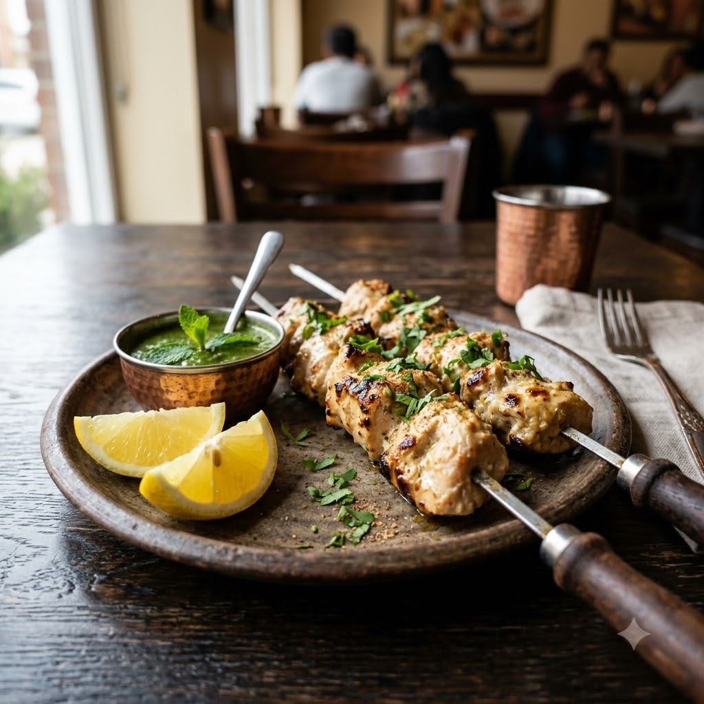

Chef Magic (Mix marinade) → Airfryer 190°C Marinate 30 min + Grill 14 min — Serves 4
Prep ahead: Marinate the chicken for at least 30 minutes (overnight is best for a silkier texture).
Ingredients
Method
Tip: This is the 'no red colour' cousin of chicken tikka — keep the marinade white and let the cream and cashew do the work.